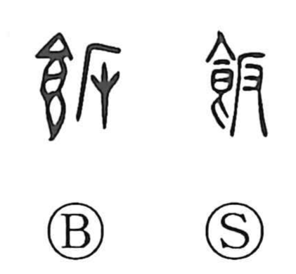

飯

Kun: meshi | On: han
meal ・ cooked rice ・ to eat
Explanation
飯 is a phono-semantic character: the left side is the food radical 食, while the right side 反 supplies the on reading han. The Shuowen already glosses it as “to eat,” and the character came to be used for staple foods such as millet and foxtail millet, as well as for meshi, cooked rice or a meal. Ritual prescriptions in the Book of Rites note that millet was eaten with a spoon rather than chopsticks, and that one should not roll rice into a ball. From such practices we learn that in antiquity food was commonly pinched by hand, chiefly with the thumb; Shirakawa takes this to be reflected in the graph, with 反 also evoking the thenar—the fleshy base of the thumb—within the act of eating.